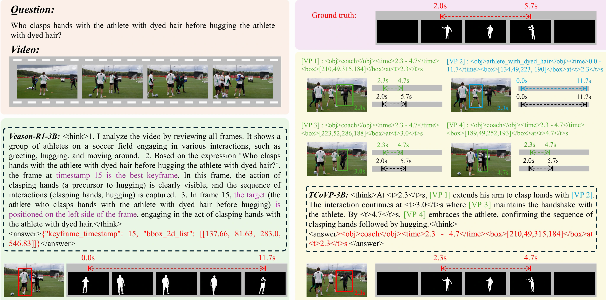
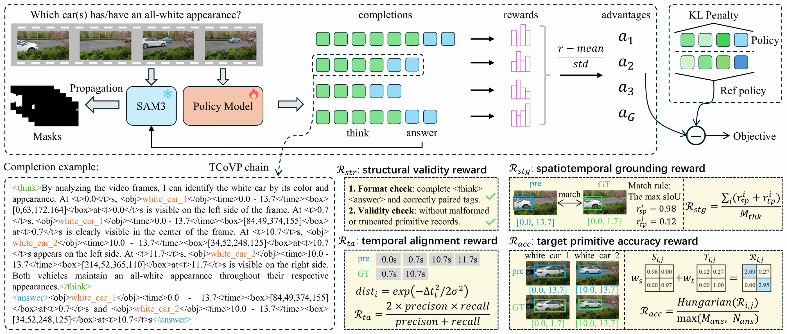
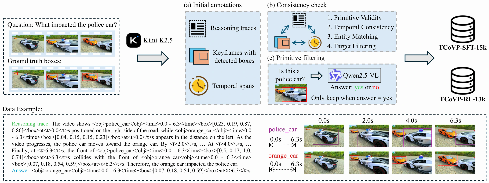
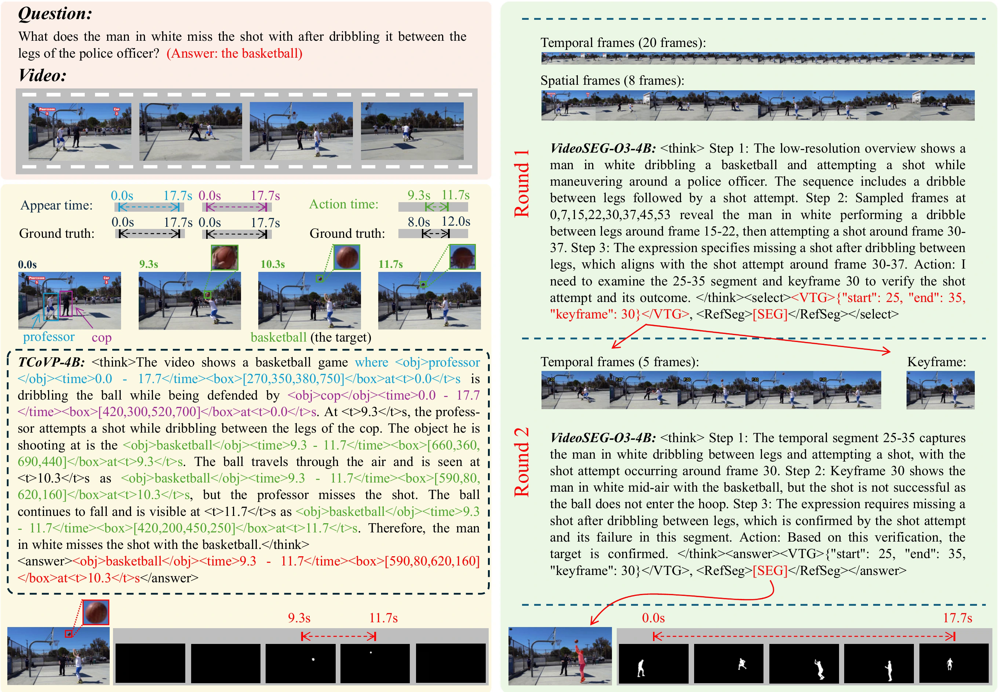
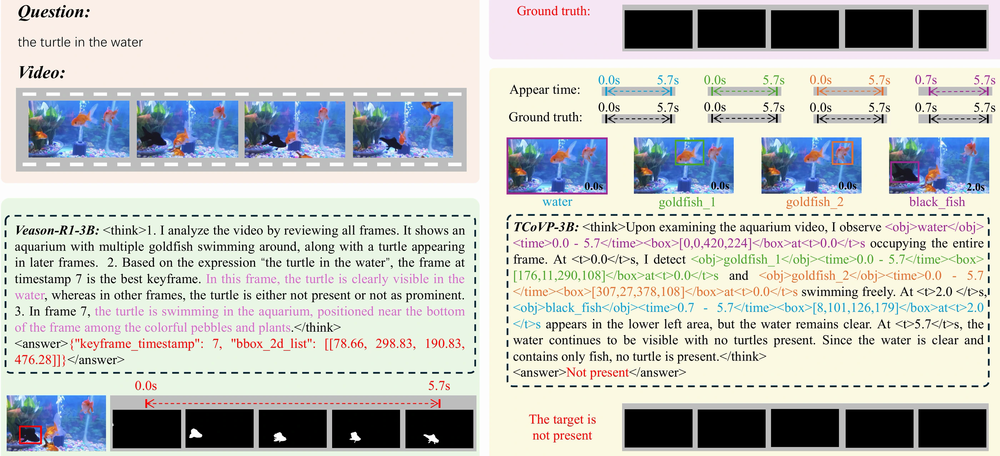

TCoVP-SFT-15k
Complete reasoning trajectories interleaved with temporal video primitives teach the canonical chain serialization.
See it in action
Overview
Video Reasoning Segmentation (VRS) requires a model to identify an implicitly described target and predict its pixel-level mask trajectory, while resolving the spatial relations and temporal events that determine the answer. Text-only Chain-of-Thought (CoT) can explain a target choice without making the underlying visual references explicit, leaving a video reference gap between linguistic inference and the evidence distributed across frames.
We introduce Temporal Chain of Video Primitives (TCoVP), a spatiotemporally grounded form of Video CoT that organizes query-relevant observations into a chronological reasoning chain. Each primitive associates an entity reference with temporal support and timestamped spatial evidence, and the chain interleaves these references with language to guide reasoning about which entity is relevant, when the queried event holds, and where its evidence appears. The selected target primitives then provide box prompts and temporal support for video mask prediction.
We construct TCoVP-SFT-15k and TCoVP-RL-13k to learn this representation through supervised fine-tuning and chain-aligned reinforcement learning. Extensive experiments across five VRS benchmarks and three model backbones demonstrate the strong performance of TCoVP, highlighting the effectiveness of organizing spatial and temporal evidence within the reasoning process. All models and code will be publicly released.
Quantitative results
Evaluation across implicit target resolution and motion-grounded segmentation, using Qwen2.5-VL-3B, Qwen3-VL-4B, and Molmo2-4B.
Scroll horizontally to view all columns on smaller screens.
| Methods | Overall | Causal | Sequential | Counterfactual | Descriptive | ||||||||||
|---|---|---|---|---|---|---|---|---|---|---|---|---|---|---|---|
| J&F | J | F | J&F | J | F | J&F | J | F | J&F | J | F | J&F | J | F | |
| Two-Stage Baseline | |||||||||||||||
| ViLA (Lin et al., 2024)+ReferFormer | 16.37 | 14.84 | 17.89 | 15.92 | 14.33 | 17.52 | 16.30 | 14.94 | 17.67 | 13.63 | 12.35 | 14.91 | 19.61 | 17.78 | 21.45 |
| ViLA (Lin et al., 2024)+SgMg | 17.07 | 15.25 | 18.89 | 17.34 | 15.43 | 19.26 | 16.30 | 14.57 | 18.04 | 15.31 | 13.96 | 16.67 | 19.18 | 16.96 | 21.40 |
| ViLA (Lin et al., 2024)+HTR | 15.72 | 13.90 | 17.53 | 16.46 | 14.60 | 18.31 | 15.11 | 13.39 | 16.83 | 12.61 | 11.22 | 13.99 | 18.37 | 16.10 | 20.63 |
| VideoChat2 (Li et al., 2024)+ReferFormer | 15.38 | 13.84 | 16.93 | 14.74 | 13.10 | 16.37 | 13.95 | 12.69 | 15.21 | 13.12 | 11.80 | 14.43 | 19.82 | 17.89 | 21.74 |
| VideoChat2 (Li et al., 2024)+SgMg | 16.65 | 14.83 | 18.48 | 16.64 | 14.75 | 18.54 | 14.70 | 13.02 | 16.38 | 15.22 | 13.87 | 16.58 | 20.01 | 17.68 | 22.34 |
| VideoChat2 (Li et al., 2024)+HTR | 15.08 | 13.25 | 16.90 | 15.91 | 14.00 | 17.81 | 13.91 | 12.33 | 15.50 | 11.97 | 10.56 | 13.37 | 18.17 | 15.82 | 20.52 |
| SeViLA (Yu et al., 2023)+ReferFormer | 20.37 | 18.99 | 21.75 | 21.29 | 19.86 | 22.72 | 18.27 | 17.06 | 19.48 | 17.56 | 16.37 | 18.75 | 24.01 | 22.35 | 25.66 |
| SeViLA (Yu et al., 2023)+SgMg | 22.34 | 20.92 | 23.75 | 21.60 | 20.17 | 23.02 | 21.68 | 20.47 | 22.89 | 20.46 | 19.32 | 21.61 | 24.53 | 22.83 | 26.22 |
| SeViLA (Yu et al., 2023)+HTR | 21.75 | 19.85 | 23.64 | 22.28 | 20.42 | 24.15 | 20.37 | 18.60 | 22.14 | 19.70 | 18.03 | 21.36 | 24.41 | 22.11 | 26.71 |
| Video Reasoning Segmentation Baseline | |||||||||||||||
| PG-Video-LLaVA (Munasinghe et al., 2023) | 11.17 | 11.47 | 10.89 | 10.57 | 10.82 | 10.33 | 10.93 | 11.15 | 10.71 | 10.36 | 10.37 | 10.34 | 12.51 | 13.04 | 11.99 |
| PG-Video-LLaVA+SAM2 (Ravi et al., 2024) | 11.85 | 11.15 | 12.55 | 13.35 | 12.84 | 13.85 | 3.85 | 2.49 | 5.22 | 15.52 | 15.16 | 15.89 | 12.11 | 11.37 | 12.85 |
| VISA (Yan et al., 2024) (Chat-UniVi-13B) | 5.31 | 4.72 | 5.90 | 6.07 | 5.50 | 6.64 | 4.48 | 3.80 | 5.15 | 5.10 | 4.34 | 5.86 | 5.39 | 5.02 | 5.77 |
| MORA (Deng et al., 2025) (LLaVA-13B) | 23.13 | 22.79 | 23.46 | 21.62 | 21.46 | 21.79 | 22.43 | 22.03 | 22.83 | 26.37 | 25.87 | 26.88 | 22.63 | 22.30 | 22.97 |
| RL-based VRS Methods | |||||||||||||||
| Veason-R1-3B (Gong et al., 2026) (Qwen2.5-VL-3B) | 23.53 | 22.03 | 25.04 | 23.73 | 22.04 | 25.43 | 21.06 | 19.80 | 22.31 | 22.78 | 21.50 | 24.06 | 26.51 | 24.77 | 28.26 |
| VideoSEG-O3-2B (Dai et al., 2026) (Qwen3-VL-2B) | 29.06 | 27.39 | 30.72 | 30.93 | 29.21 | 32.65 | 26.97 | 25.42 | 28.52 | 22.04 | 20.62 | 23.46 | 35.49 | 33.54 | 37.44 |
| VideoSEG-O3-4B (Dai et al., 2026) (Qwen3-VL-4B) | 31.96 | 30.19 | 33.73 | 34.68 | 32.88 | 36.47 | 29.71 | 28.14 | 31.28 | 25.06 | 23.51 | 26.60 | 37.39 | 35.21 | 39.56 |
| TCoVP-3B (Ours) (Qwen2.5-VL-3B) | 53.67 | 52.57 | 54.76 | 52.95 | 51.75 | 54.15 | 57.04 | 56.06 | 58.02 | 50.82 | 49.86 | 51.78 | 53.86 | 52.64 | 55.08 |
| TCoVP-4B (Ours) (Qwen3-VL-4B) | 55.21 | 54.40 | 56.01 | 52.46 | 51.67 | 53.26 | 59.65 | 58.87 | 60.42 | 55.21 | 54.47 | 55.95 | 54.18 | 53.27 | 55.09 |
| TCoVP-M-4B (Ours) (Molmo2-4B) | 55.37 | 54.50 | 56.25 | 53.00 | 52.09 | 53.92 | 60.17 | 59.28 | 61.05 | 54.51 | 53.78 | 55.24 | 54.33 | 53.37 | 55.28 |
| Methods | MLLM | Long-RVOS | ReasonVOS | ReVOS | MeViS | ||||||||
|---|---|---|---|---|---|---|---|---|---|---|---|---|---|
| J&F | J | F | J&F | J | F | J&F | J | F | J&F | J | F | ||
| SFT-based Methods | |||||||||||||
| VISA-7B (Yan et al., 2024) | Chat-UniVi-7B | - | - | - | - | - | - | 46.9 | 44.9 | 49.0 | 43.5 | 40.7 | 46.3 |
| VISA-13B (Yan et al., 2024) | Chat-UniVi-13B | - | - | - | - | - | - | 50.9 | 48.8 | 52.9 | 44.5 | 41.8 | 47.1 |
| VideoLISA-3.8B (Bai et al., 2024) | LLaVA-Phi-3-V | 14.0 | - | - | 47.5 | 45.1 | 49.9 | - | - | - | 44.4 | 41.3 | 47.6 |
| InstructSeg-3B (Wei et al., 2025) | Mipha-3B | - | - | - | - | - | - | 54.5 | 52.0 | 56.9 | - | - | - |
| HyperSeg-3B (Wei et al., 2024) | Mipha-3B | - | - | - | - | - | - | 55.7 | 53.1 | 58.4 | - | - | - |
| GLUS-7B (Lin et al., 2025) | LLaVA-7B | 25.7 | - | - | 49.9 | 47.5 | 52.4 | 54.8 | 52.4 | 57.3 | 51.3 | 48.5 | 54.2 |
| VRS-HQ-7B (Gong et al., 2025) | Chat-UniVi-7B | - | - | - | - | - | - | 59.1 | 56.6 | 61.6 | 50.6 | 47.6 | 53.7 |
| VRS-HQ-13B (Gong et al., 2025) | Chat-UniVi-13B | - | - | - | - | - | - | 60.0 | 57.6 | 62.5 | 50.9 | 48.0 | 53.7 |
| RL-based Methods | |||||||||||||
| Omni-R1-8B (Zhong et al., 2025) | Qwen2.5-Omni-7B | - | - | - | - | - | - | 56.2 | - | - | - | - | - |
| Videoseg-R1-3B (Xu et al., 2026) | Qwen2.5-VL-3B | - | - | - | - | - | - | 58.6 | 56.4 | 60.8 | 53.0 | 50.7 | 55.3 |
| ReVSeg-7B (Li et al., 2025) | Qwen2.5-VL-7B | - | - | - | 64.8 | 61.8 | 67.7 | 62.1 | 59.3 | 65.0 | 59.8 | 56.1 | 63.4 |
| RCoT-Seg-3B (Wen et al., 2026) | Qwen2.5-VL-3B | - | - | - | 58.2 | 54.6 | 61.8 | 61.2 | 58.2 | 64.3 | 53.7 | 50.7 | 56.7 |
| Veason-R1-3B (Gong et al., 2026) | Qwen2.5-VL-3B | 51.8 | 50.8 | 52.7 | 55.2 | 51.8 | 58.5 | 59.9 | 56.9 | 62.8 | 51.2 | 48.2 | 54.2 |
| VideoSEG-O3-2B (Dai et al., 2026) | Qwen3-VL-2B | 54.8 | - | - | 60.2 | - | - | 64.8 | 62.0 | 67.5 | 55.6 | 52.5 | 58.6 |
| VideoSEG-O3-4B (Dai et al., 2026) | Qwen3-VL-4B | 57.4 | - | - | 62.9 | - | - | 67.7 | 65.0 | 70.4 | 60.0 | 57.0 | 63.0 |
| TCoVP-3B (Ours) | Qwen2.5-VL-3B | 65.6 | 64.7 | 66.5 | 71.6 | 68.8 | 74.4 | 65.3 | 62.8 | 67.9 | 57.3 | 54.2 | 60.5 |
| TCoVP-4B (Ours) | Qwen3-VL-4B | 65.1 | 64.5 | 65.7 | 72.1 | 69.1 | 75.0 | 68.0 | 65.3 | 70.7 | 59.5 | 56.3 | 62.6 |
| TCoVP-M-4B (Ours) | Molmo2-4B | 67.4 | 66.8 | 67.9 | 71.5 | 68.5 | 74.5 | 68.3 | 65.7 | 70.9 | 65.2 | 62.4 | 67.9 |
| Model | ReVOS | ReasonVOS | Long-RVOS | GroundMoRe | MeViS | Macro avg. |
|---|---|---|---|---|---|---|
| Veason-R1-3B | 59.9 | 55.2 | 51.8 | 23.5 | 51.2 | 48.3 |
| Text-CoT with answer-VP | 62.0 | 65.2 | 60.5 | 46.3 | 54.8 | 57.8 |
| TCoVP-3B | 65.3 | 71.6 | 65.6 | 53.7 | 57.3 | 62.7 |
| Model | Long-RVOS | ReasonVOS | ReVOS | GroundMoRe | ||||||||
|---|---|---|---|---|---|---|---|---|---|---|---|---|
| J&F | J | F | J&F | J | F | J&F | J | F | J&F | J | F | |
| Different Training Strategies | ||||||||||||
| SFT only | 56.8 | 56.2 | 57.4 | 63.1 | 60.3 | 65.9 | 59.9 | 57.1 | 62.7 | 43.8 | 42.5 | 45.0 |
| SFT + chain-aligned RL | 65.6 | 64.7 | 66.5 | 71.6 | 68.8 | 74.4 | 65.3 | 62.8 | 67.9 | 53.7 | 52.6 | 54.8 |
| Different Reward Functions | ||||||||||||
| w/o Rta and Rstg | 62.5 | 62.1 | 62.9 | 67.4 | 64.5 | 70.3 | 63.1 | 60.4 | 65.8 | 47.9 | 46.8 | 49.1 |
| w/o Rstg | 63.2 | 62.6 | 63.7 | 65.6 | 62.7 | 68.4 | 63.5 | 60.8 | 66.2 | 49.2 | 48.0 | 50.4 |
| w/o Rta | 64.0 | 63.6 | 64.4 | 68.5 | 65.7 | 71.4 | 63.9 | 61.3 | 66.6 | 48.4 | 47.4 | 49.5 |
| TCoVP-3B | 65.6 | 64.7 | 66.5 | 71.6 | 68.8 | 74.4 | 65.3 | 62.8 | 67.9 | 53.7 | 52.6 | 54.8 |
The idea
An entity can stay in view long after the queried action ends. TCoVP links observations across frames and separates the target’s relevant action interval from its overall presence in the video.
Record relevant entities with an identity, a timestamped bounding box, and temporal support. Reuse identifiers to connect observations.
Interleave language with chronologically ordered primitives to resolve interactions, event order, and the intended target.
Prompt SAM3 with the selected target boxes. For motion-grounded queries, restrict mask output to the predicted action interval.

Learning to ground the chain
Supervised fine-tuning teaches the representation. Reinforcement learning then rewards structural validity, temporal alignment, spatiotemporal grounding, and target primitive accuracy.

Training data
Two corpora built from the training splits of ReVOS, MeViS, Long-RVOS, and GroundMoRe, covering single-target, multi-target, and zero-target queries.
Complete reasoning trajectories interleaved with temporal video primitives teach the canonical chain serialization.
Examples with reward-compatible primitive annotations support temporal, spatial, and target-level supervision.

Qualitative examples
Explicit references help distinguish contextual participants from the queried object, and recognize when the requested target is absent.
The query asks what the man in white misses after dribbling between the police officer’s legs. TCoVP separates the basketball from the contextual participants and grounds the relevant interval at 9.3–11.7 seconds.

The query asks for “the turtle in the water,” but no turtle appears. TCoVP grounds the visible water and fish, concludes that the target is absent, and returns an empty answer.

TCoVP uses 16 uniformly sampled frames, so brief events can fall between observations. Cross-entity actions and relations are expressed in language, and final masks can inherit SAM3 propagation errors. Adaptive temporal sampling, denser spatial evidence, and structured interaction representations are promising directions.
Reference